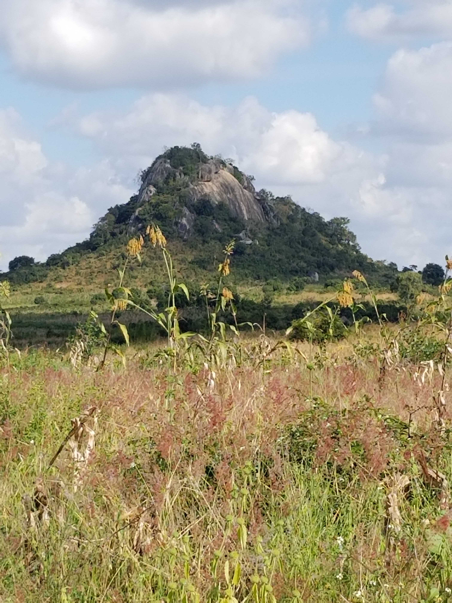
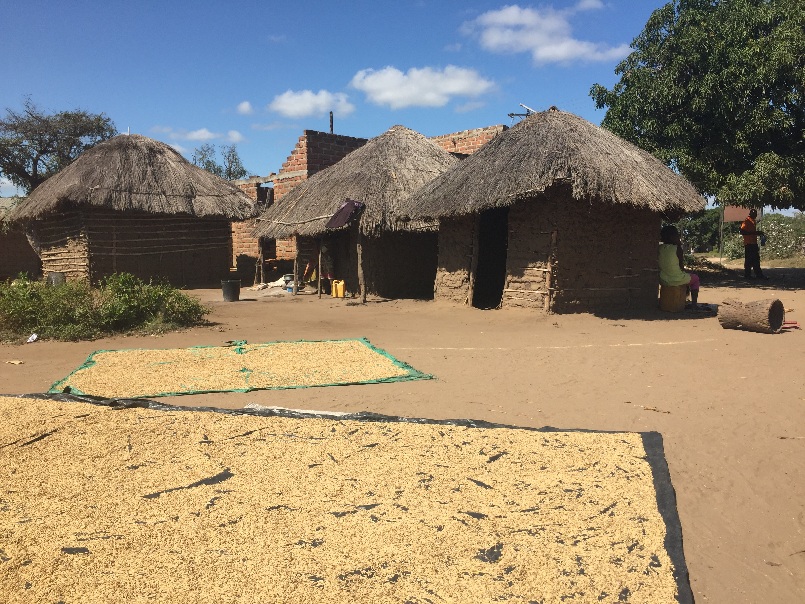
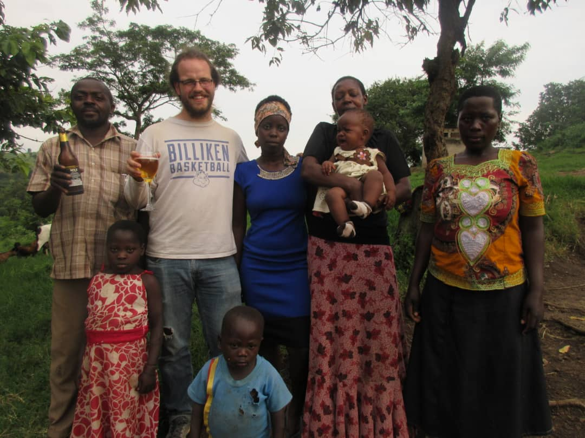
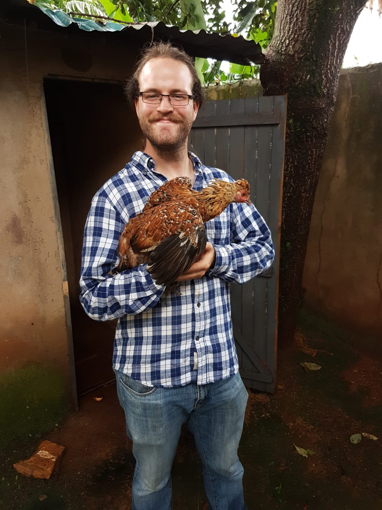
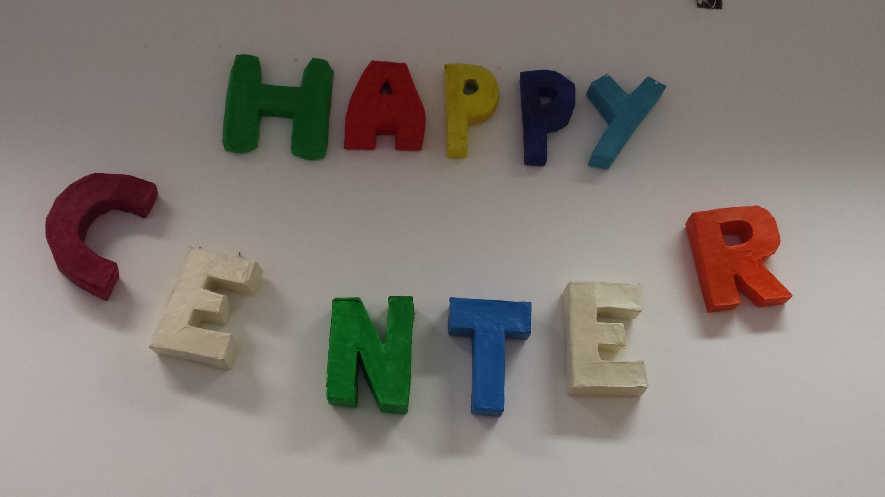
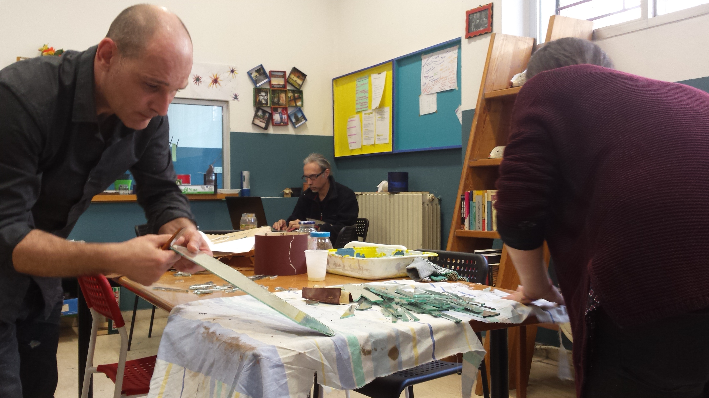
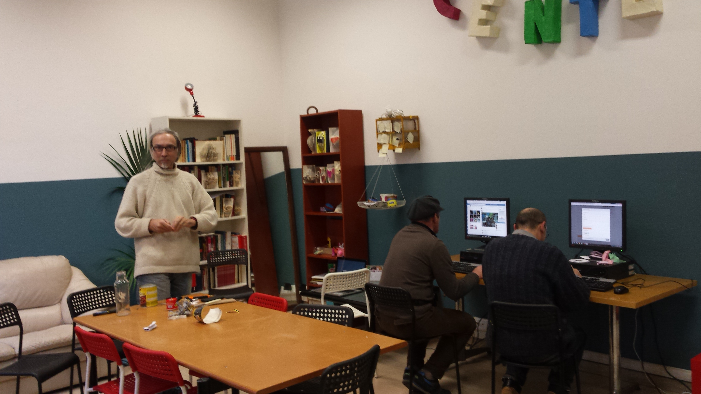
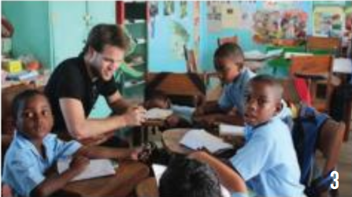
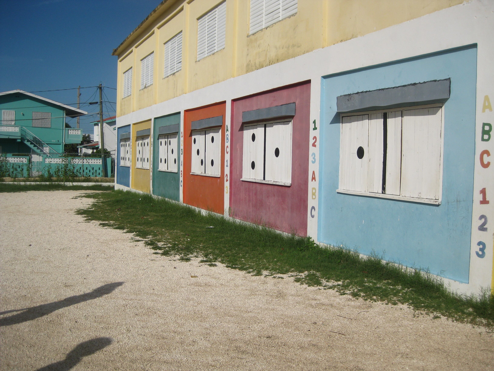
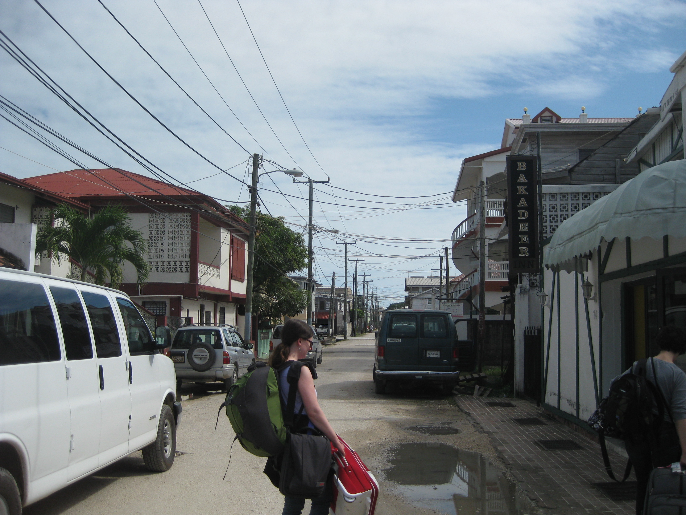

Fieldwork
I have conducted fieldwork in several countries either for research or supporting NGO operations. While all are not developing nations, the aims and focus of the fieldwork center on improving lives and developing economies. As a practitioner in the field, it is my strong belief that development outcomes are not solely limited to those living in developing countries. Many people in developed nations need assistance in overcoming the barriers that impede their opportunity set. 1 2
Morroco
The Ministry of Education in Morocco introduced the Pioneer Schools Program (PSP) in 2023. Over the past two years, we have been using a matched difference in difference technique to assess this education reform across primary schools in the country. A mixture of teaching at the right level (TaRL), teacher certificates, teacher coaching, and pedagogy change, this program is typical of large scale education reform in developing countries.
Jordan
We are examining the impact of a AI chatbot for mathematics assistance to Grade 6 students in Jordan. This education technology, Darsel, is emblematic of the current advancements and approach to cost-effective EdTech in developing countries.
Beira, Mozambique
Starting in June 2020, I began working for Dean Yang at the University of Michigan on ongoing fieldwork and the RCTs in northern and central Mozambique. Following the endline survey evaluating an PEPFAR’s HIV testing and ART adherence intervention in 2019, this study resulted in an article highlighting the importance of knowledge and stigma related to HIV/AIDS in increasing HIV testing. Starting in 2020, our team proceeded with three rounds of over-the-phone health interventions and surveys to adjust for the survey restrictions imposed by the onset of the Covid-19 Pandemic. The aim of the five treatment arms involved in these over-the-phone interventions were to increase support and practice of social distancing along with increase knowledge about Covid-19 and Covid-19 related policies. This resulted in papers covering social distancing interventions, and knowledge interventions as a result of the Pandemic. Through 2021, we continued to use phone interviews as well as phone surveys to conduct interventions to understand vaccine decision making and increase COVID-19 vaccine uptake. In 2022, we began to pilot the ProProgresso intervention to informt the optimization of selection and compenstation for community health workers.
Keywords: Public Health RCT HIV/AIDS COVID-19 Social Distancing Knowledge Stigma Vaccination Community Health Workers Mozambique



Kampala, Uganda
From May through August of 2019, I worked with BRAC Uganda Independent Evaluation and Research Center (IERC) based out of Kampala, Uganda under Danish Us Salam. During this time, I contributed to two randomized control trails (RCT) in the field. The first being BRAC’s flagship program Targeting the Ultra-Poor Graduation Program (TUP) made famous for its success in helping the poorest members of already poor communities. I assisted on the endline household survey following-up on households in Luwero, Bombo, Zirobwe, Kigumba and Bweyale districts in Central Uganda. The focus of TUP is to provide the most vulnerable households in already vulnerable communities, with job training and unconditional asset transfers (eg. livestock). Additionally, this endline survey piloted the effects of the newly developed Village Savings and Lending Associations (VSLA) starting to be developed by BRAC adjacent to its already established microfinance program. The endline report can be found Here. I also assisted in the baseline household survey RCT for Strong Minds - Mental Health & Adolescent Empowerment (SMU) aimed at adolescent girls within Kampala. This RCT focuses on improving the mental health and wellbeing of depressed adolescent girls living in households where they are provided little agency. This is incentivized through both a unconditional cash transfer as well as local therapy groups. While living in Kampala, I bought three chickens who I named after economists: Ester Dufluff (Ester Duflo), Elenor Eggstrom (Elenor Ostrom), and Petra Lorhenzen (Peter Lorentzen). Ester is missed dearly.
Keywords: BRAC RCT Targeting the Ultra Poor Graduation Program Mental Health VSLA Uganda



Buena Vista, Honduras
During the winter of 2015-2016, I worked with Saint Louis University Global Brigades Microfinance (later renamed Global Brigades Business) to establish a Village Lending and Savings Association (VSLA) in Buena Vista, Honduras. VSLAs are a form of local credit union operated by the local constituents that is serves. This is an especially effective method of providing access to credit to rural communities whose barriers to financial institutions are constrained. In this particular context, farmers were struggling to payback preditory microloans provided by Coyotes (Loan Sharks) since this was their only lines of credit before planting seasons. Additionally, we provided financial literacy to the members of the VSLA in an effort to increase their ability to both improve their financial stability as well as reduce their likelihood of being swindled through financial jargon. We used qualitative household surveys to build the local VLSA around the members needs and helped redistribute resources to local businesses with the highest potential and households in the direst financial need.
Keywords: Global Brigades Financial Literacy VSLA Honduras
Bologna, Italy
While studying abroad in Bologna, Italy in the Fall of 2015, I took on a humanities internship with Piazza Grande, Happy Center under Carlo Salmaso. This organization works to provide services to both the local homelessness population and migrants arriving in Bologna as a result of the European Migrant Crisis. The Happy Center is a segment of Piazza Grande focused on rehabilitation through migrant assimilation to the community, as well as social and mental health rehabilitation for the homeless. The aim of this project is to recognize that being a non-native migrant or homeless often ostracizes you from your community leading to impaired social skills and mental stabilty.
Keywords: Piazza Grande Migration Homelessness Mental Health Italy



Belize City, Belize
As a part of the Service Leadership Program at Saint Louis University, I was provided the opportunity to engage with work being done in Belize City, Belize. The focus of our work aimed at assisting a primary school, Saint Martin de Porres, in an extermely violent part of the city. As a result of deportation of gang members in the 1980s and 1990s from the United States, gang violence has become a dominating factor in the lives of most Belizeans as drug trafficking through Central America became more and more lucrative. As a result, local gangs find it advantageous to recruit children at younger and younger ages. The major issue we tried to address was working with the school to find solutions to keep children in school rather than dropping out to join a local gang. This involved working directly with teachers, adminstrators and students to find methods of improving accessibility, learning in the classroom, and retention at Saint Martin de Porres.
Keywords: Service Leadership Education Gang Violence Belize


